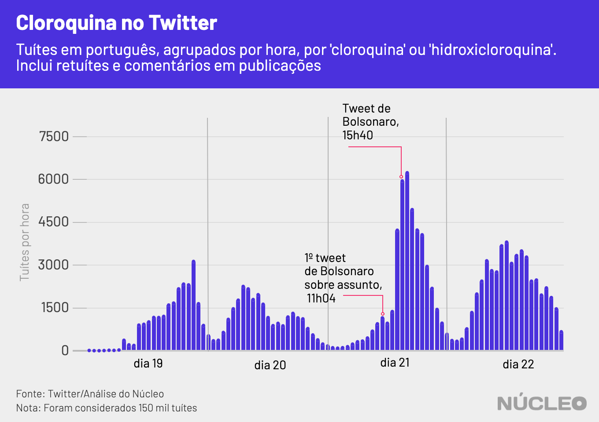
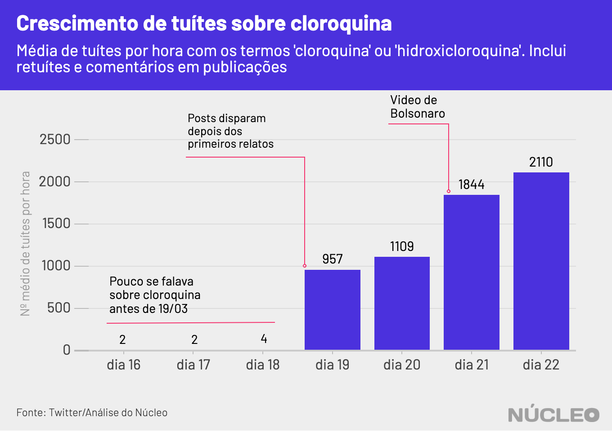
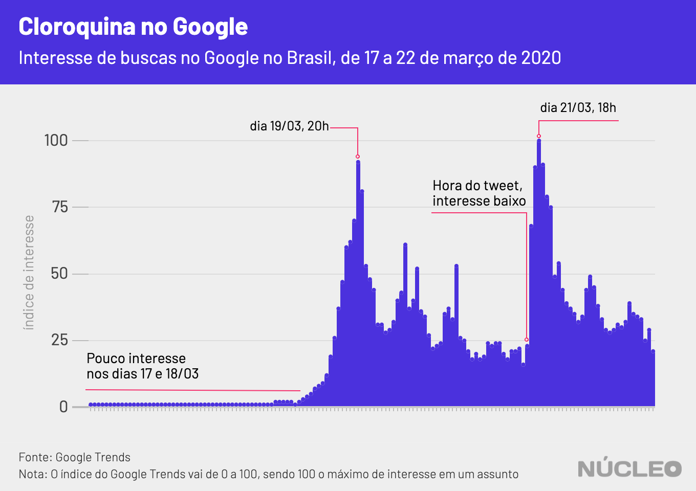

Análise Sérgio Spagnuolo
Gráficos Sérgio Spagnuolo
Arte Rodolfo Almeida
Edição Alexandre Orrico
Na tarde de sábado, 21 de março, o presidente Jair Bolsonaro publicou um vídeo no Twitter no qual anuncia “possível cura dos pacientes com a COVID-19”, sem fazer nenhum alerta, aviso ou menção de que os resultados do tratamento com cloroquina contra o coronavírus ainda são inconclusivos, de acordo com especialistas e autoridades sanitárias em todo o mundo.
A cloroquina e a hidroxicloroquina já vinham ganhando notoriedade na última semana após a divulgação de pesquisas ainda preliminares com o medicamento. O site de checagem Aos Fatos explica bem o assunto.
É importante porque…
-
Ainda não é cientificamente comprovado (até ao menos 23/03) que cloroquina seja de fato eficiente contra COVID-19
-
Endosso presidencial pode levar a compras desnecessárias e desabastecimento do produto para os que mais precisam dele
Acesse aqui dados em tempo real sobre a pandemia - via Johns Hopkins University
No entanto, as buscas online e tuítes sobre o assunto cresceram ainda mais após o vídeo do presidente, de acordo com análise do Núcleo com dados do Twitter e do Google Trends.

A média de tuítes por hora com os termos “cloroquina” ou “hidroxicloroquina” naturalmente disparou após notícias sobre o estudo, no dia 19. O vídeo de Bolsonaro serviu, então, para não apenas reacender como também impulsionar o interesse, que já era grande.
O número de tuítes por hora no dia 21 (frente ao dia anterior) sobre o tema cresceu 66% após o vídeo, para 1.844 publicações.

Isso é significativo porque, por ter quase um endosso do presidente como “possível cura”, sem nenhum alerta ou contraindicação, muitas pessoas podem correr para comprar o medicamento, acabando com estoques para aqueles que realmente precisam e se automedicando indevidamente. Segundo a agência de notícias Bloomberg, dois gramas de cloroquina podem ser letais.
A procura pelo medicamento nas farmácias aumentou tanto, mesmo antes do vídeo de Bolsonaro, que a Anvisa determinou na última sexta-feira que os produtos sejam considerados de uso “controlado”. No entanto, no Brasil, ainda é comum a compra de medicamentos controlados mesmo sem prescrição médica.
“A medida é para evitar que pessoas que não precisem desses medicamentos provoquem um desabastecimento no mercado. A falta dos produtos pode deixar os pacientes com malária, lúpus e artrite reumatoide sem os tratamentos adequados”, informou a Anvisa em nota.
O aumento do interesse depois do vídeo de Bolsonaro também ser visualizado a partir de buscas do Google, maior mecanismo de busca da internet. O pico de interesse acontece logo depois do tuíte de Bolsonaro com o vídeo.

Na imprensa
-
Eficácia da cloroquina para a cura da Covid-19 não é comprovada ⋅ Aos Fatos ⋅ (20/03/2020)
-
Hidroxicloroquina não é garantia de cura do coronavírus, diferentemente do que circula nas redes ⋅ Folha de S.Paulo ⋅ (23/03/2020)
-
Google registra explosão de buscas por seguro-desemprego em meio a MP de Bolsonaro e coronavírus ⋅ Folha de S.Paulo ⋅ (23/03/2020)
-
Todas as declarações de Bolsonaro sobre coronavírus, checadas ⋅ Aos Fatos ⋅ (19/03/2020)
-
Não há evidência científica de que auto-hemoterapia cure a Covid-19 ⋅ Aos Fatos ⋅ (23/03/2020)
METODOLOGIA
O Núcleo analisou 150 mil tuítes, de 15 a 23 de março de 2020, captados pela API gratuita do Twitter. O código da análise pode ser encontrado aqui.
Os dados do Google são da plataforma do Google Trends e vão de 16 a 23 de março. No caso do Google, optou-se apenas por “cloroquina” pois foi o termo utilizado no vídeo do presidente. No caso do Twitter, incluiu-se ‘hidroxicloroquina’ para aumentar a base de análise, já que o termo estava sendo utilizado também nessa rede. Para melhorar a visualização, em alguns casos os primeiros e último dia não foram incluídos nos gráficos, o que não muda a análise.
Por fim, o link para o tuíte do vídeo de Bolsonaro.
APOIE O NÚCLEO, PAGUE
POR ESTE CONTEÚDO
- Via PIX, é rápido e fácil
- Use o QR no app do banco
- Ou copie a chave
- A Quantia você define